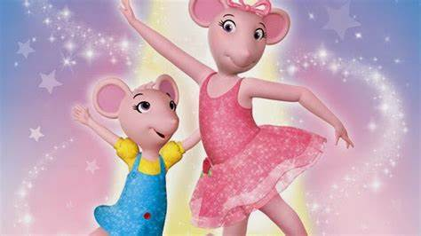

Vamos comecar? aperte em "começar" para iniciar a aula.
Em qual pais o ballet surgiu?
O primeiro passo da barra é?
Qual é a tradução do passo Demi-plié?
No meio de uma apresentação, que comida voce deve levar para comer?
Quem é o vilão do "O lago dos cisnes"?
Que boneco a personagem de "O quebra nozes" mais gostou?

Que pena... Voce errou.

Parabens! Voce conseguiu concluir a aula.